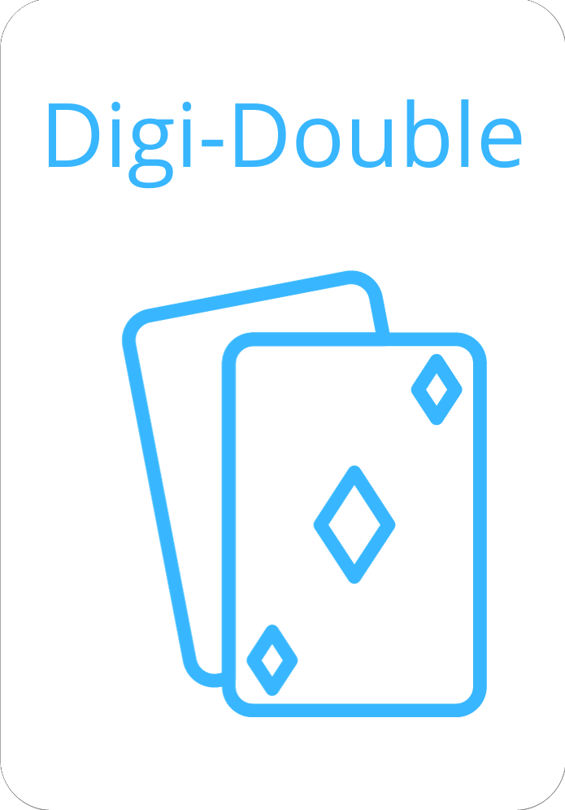

Board Game Rules
Objective: Be the first to reach the finish line by answering questions correctly !
Components:
- - 1 game board.
- - 59 cards.
- - 4 tokens.
- - 1 die (available on the website).
- - 1 digital timer (available on the website)
Setup:
- - For 2 to 4 players
- - Each player chooses a pawn and places it on the starting line
- - Players take turns rolling the die, and the player with the highest number goes first
- - The game proceeds clockwise
Gameplay:
- - The color of the space determines the question theme (excluding special spaces)
- - Players have 30 seconds to answer a question from the provided options
- - Correct answers allow the player to advance one space; incorrect answers make the player move back one space
- - Running out of time counts as an incorrect answer
- - Special spaces have unique rules (Double Question, Joker, Duel, Jump)
- - The first player to reach the finish line wins
Special Spaces:
- - Digi-Double : Player answers two questions; both correct moves forward, one correct moves forward one space, none correct moves back one space
- - Digi-Joker: Grants one-time use of a joker for a chosen question
- - Digi-Duel: Player challenges another; first to answer correctly moves forward, other moves back
- - Digi-Jump: Skips one space without a question
- - Digi-Jail: The player does to jail and has to win the maze challenge in 10 secondes to get out
